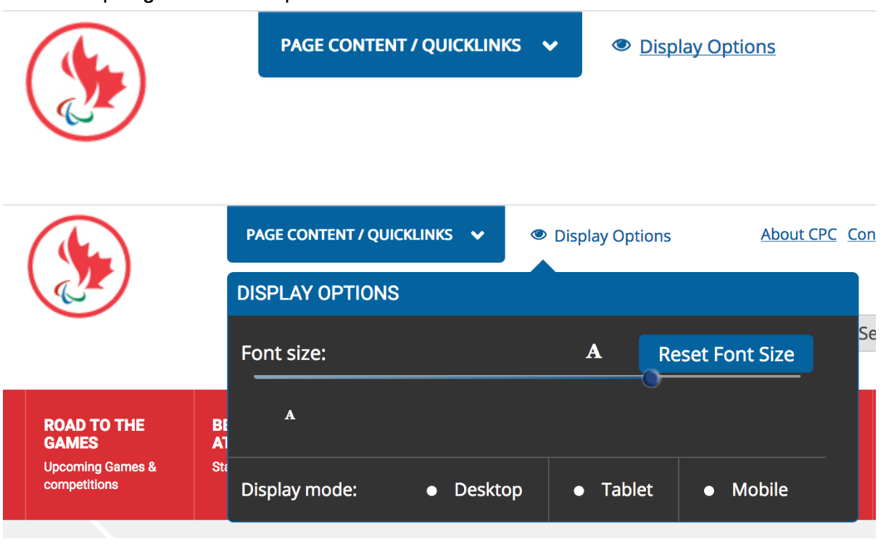
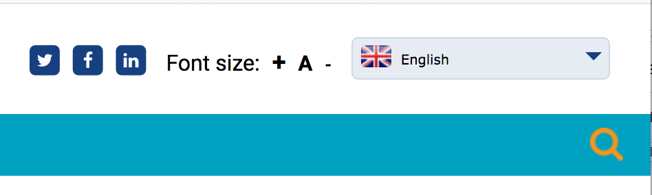
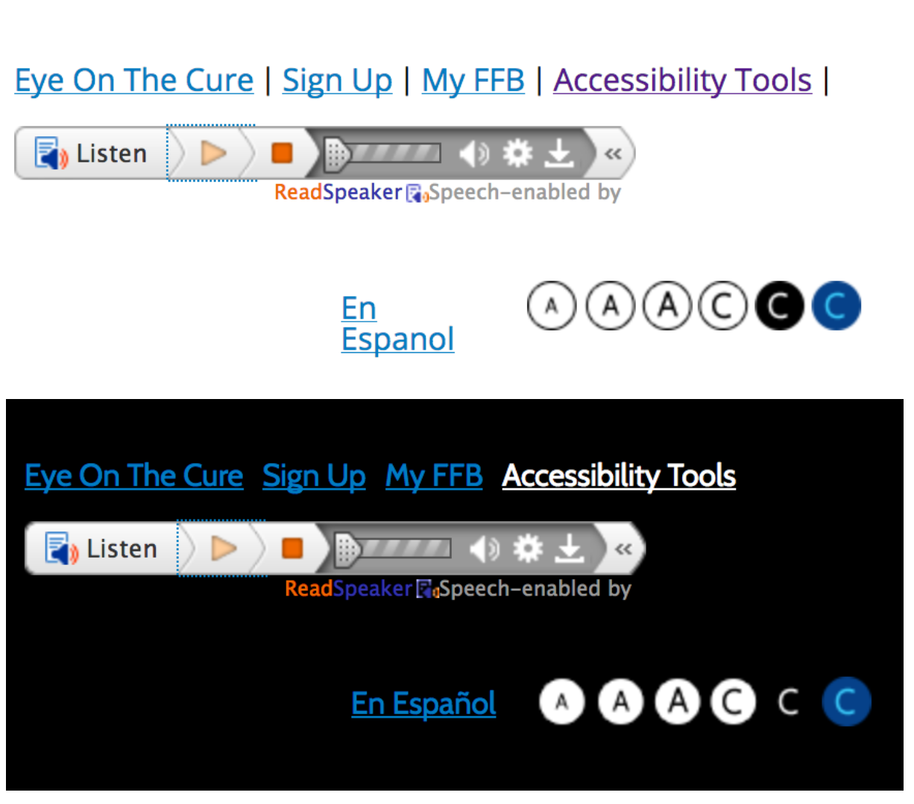
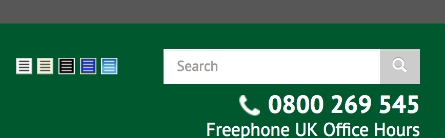
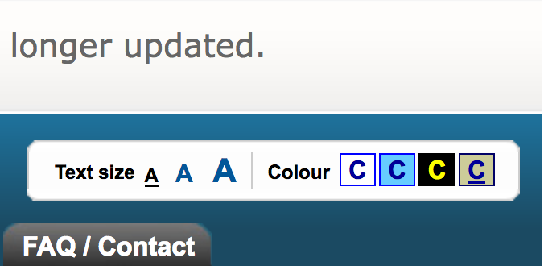
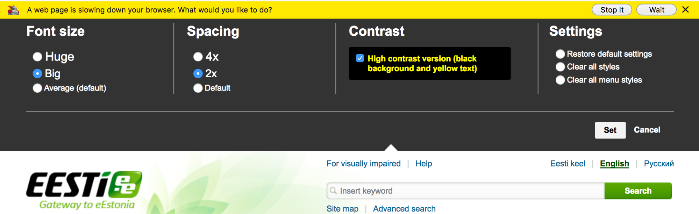
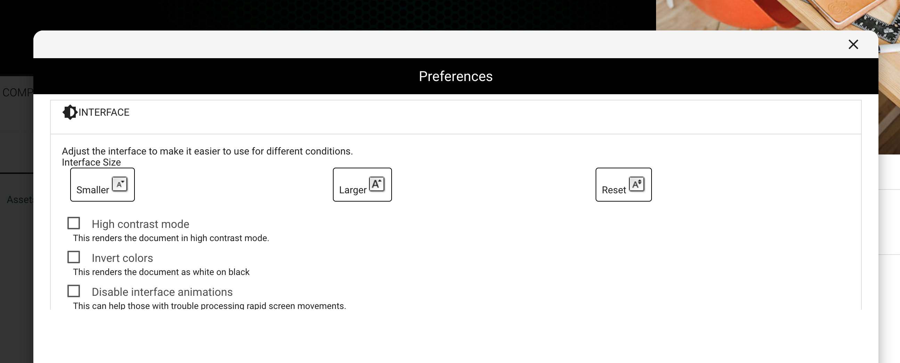
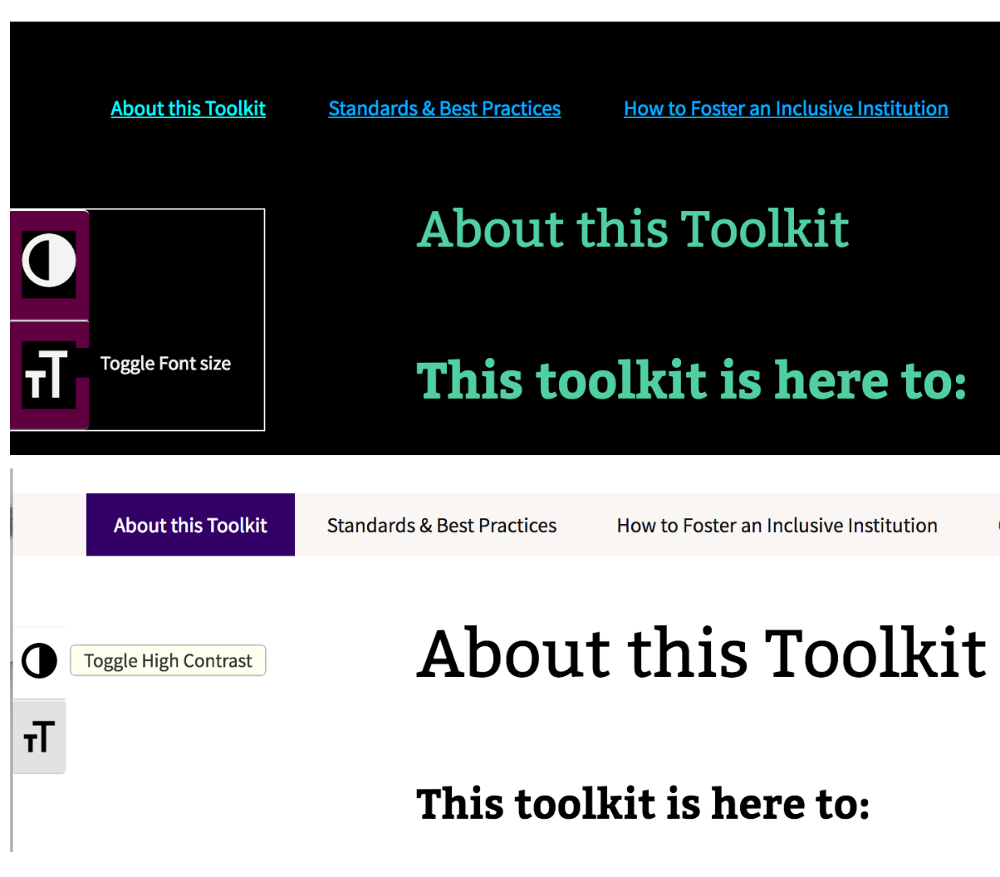
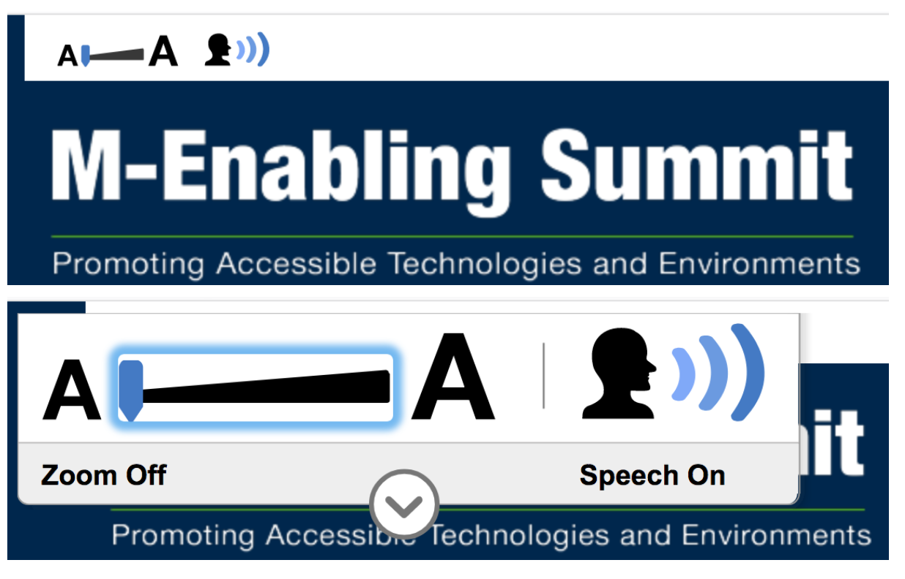

Accessibility Widgets
on
I've written on our decision to move ahead an accessibility widget in Personalization & Accessibility with Drupal. I thought it would be worthwhile highlighting some of the various options that are currently being used in a number of sites. I do now believe that they are an important part of building more accessible content.
I wanted to highlight a few of the options for preference widgets because there are just so many and there are very few common patterns. Adding an accessibility feature is nice, but it is important that it is discoverable.
Paralympic.ca Site

Features: Nice simple visual & text description.
The title is good, but the functions are weak for the space provided. The slider is overkill for no reason. Nice to see that it is built on an open source project, fd-slider. No mobile perspective. Unclear why you’d have people choose desktop, tablet or smartphone view. Font size widget looks different and behaves slightly differently in Firefox & Chrome. A bit quirky in Firefox with a keyboard usage.
Leaderdog.org Site
Features: AAA & Reverse Contrast
No mobile view. Text resize only works on one element of the page (and that’s a big button).
The International Agency for the Prevention of Blindness (IAPB) Site

Features: Simple + A - widget.
The - would have to be pretty big to make it visible. Nice to see it using the WPPlugins zoom-widget. Pretty simple. +/- might be a bit small, particularly on mobile. There was no focus behavior on this implementation.
Foundation Fighting Blindness

Features: AAA & CCC, Page read out (ReadSpeaker)
Bad keyboard navigation between AAA & CCC. Not all the links seem to work. Icon red & focus was square.
AbilityNet.org.uk Site

Features: Changing page colors
Just leveraging Drupal’s Page Style Module. Not very flexible for fonts or dyslexic users but good for low vision.
BBC My Way Site

Features: Change Text Size A A A Change Color C C C C
This was a really good model for personalization. Unfortunately, this code is no longer supported. This was an older site, so there is no mobile support.
Estonia's EESTI.ee Site

Features: Font size in plain language, spacing, one contrast option
This custom implementation probably saves a cooking to store the preferences. Seems to be very slow. The settings didn’t seem to work as expected.
ELMS Learning Network Drupal Distribution

Features: Nice to have a central way to disable animations on a website.
First time I've seen that. Given that browsers aren't providing good support yet, this is important. The high contrast & font size configurations were pretty standard. Interesting that you could invert it.
Web Accessibility Toolkit Site

Features: On focus/hover, there is a text description of the flip contrast or make larger T T button using the WordPress Accessibility Widget. Only one option for each. Is first link on focus (not the skip link).
AT Bar Widget

Features: open-source, cross-browser toolbar.
Funded by Mada Center. Probably not supported. Code not on GitHub. Set up in 2011. Looks dated. Not very flexible for fonts or dyslexic users. Not very mobile friendly.
M-Enabling.com Site

Features: Text Size Slider & Page Reader Combined. Widget zooms in on focus. Zoom to 3X Zoom on, Speech on is nice, but not sure it is necessary. Can adjust the size with a keyboard.
Like the dynamic zoom for more functionality. Not open source but based on Sitecues. First link isn’t the skip link. Hover/Focus behavior isn’t consistent. Zoom slider forces you to scroll left/right as well as up/down. Not mobile friendly. Not as easy to control voice elements as I’d thought. Could actually make people sick who have Visually Induced Motion Sickness.
Conclusion
I still really prefer the Fluid Project's Preference Framework as a tool.
Share this article


About The Author

Mike Gifford is the founder of OpenConcept Consulting Inc, which he started in 1999. Since then, he has been particularly active in developing and extending open source content management systems to allow people to get closer to their content. Before starting OpenConcept, Mike had worked for a number of national NGOs including Oxfam Canada and Friends of the Earth.